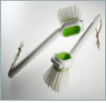

- UPM ForMi PP Biocomposite Survey - cost-effective and high-performance alternative to PP and ABS
UPM ForMi PP biocomposites are excellent materials to reduce your environmental impact by playing on different parameters such as weight, renewable content, and carbon footprint.
Green materials are often suspected as “low performance” products where sacrifices are inevitable. UPM ForMi biocomposites are green compounds but exhibit similar and even higher mechanical performance than PP Talc, with high quality surface finishing. Furthermore, UPM ForMi are not more expensive than PP or ABS because of their green touch. They have roughly the same price as PP talc and are dramatically less expensive than ABS.
Comparison of PP biocomposites profile vs. PP 40% Talc and ABS:
| PP 40% Talc | UPM ForMi PP biocomposites | ABS | |
|---|---|---|---|
| Cost range |  | ||
| Tensile performance | |||
| Impact performance | | | |
| Look and Feel quality | | ||
| Weight | | | |
| Carbon footprint | |||
| Renewable content | | |
Details and data of PP Biocomposites:
- Cost range
PP biocomposites have a price in the range of PP talc. Compared to ABS, the cost of PP biocomposite is dramatically lower.
Second Table Heading
| Tensile Strength [N/mm2] | Tensile Modulus [N/mm2] | Charpy Impact Strength Notched | Charpy Impact Strength Unnotched | |
|---|---|---|---|---|
| PP | 28 | 1360 | 6.5 [kJ/m2] | - |
| PP 40% Talc | 3210 | 1360 | 4.8 [kJ/m2] | 44 [kJ/m2] |
| PP 40% Biocomposite | 50 | 3800 | 5.5 [kJ/m2] | 45 [kJ/m2] |
| ABS | 43 | 2350 | 18.5 [kJ/m2] | 117 [kJ/m2] |
Another Key Points :
❖ Look and Feel quality
Far from feeling cheap when you handle them in your hands, UPM ForMi offers an excellent surface touch of high quality. PP biocomposites are easy to paint, offer a broad range of possible textures and are odorless materials. All these properties contribute to design high quality of your end products.
❖ Weight
UPM ForMi grades are 13% lighter than PP talc, with the same filling rate. The weight of 40% loaded biocomposite grades are similar to ABS.
❖ Carbon footprint
PP users: reduce your carbon footprint by 16% min. up to 47%.
ABS users: reduce your carbon footprint by 52% min. up to 70.%
❖ Renewable content
Biocomposites are made from 20 - 50% of renewable-based cellulose fibers coming from sustainably managed forests